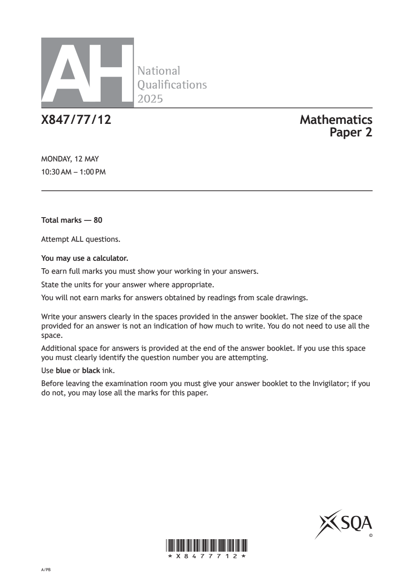
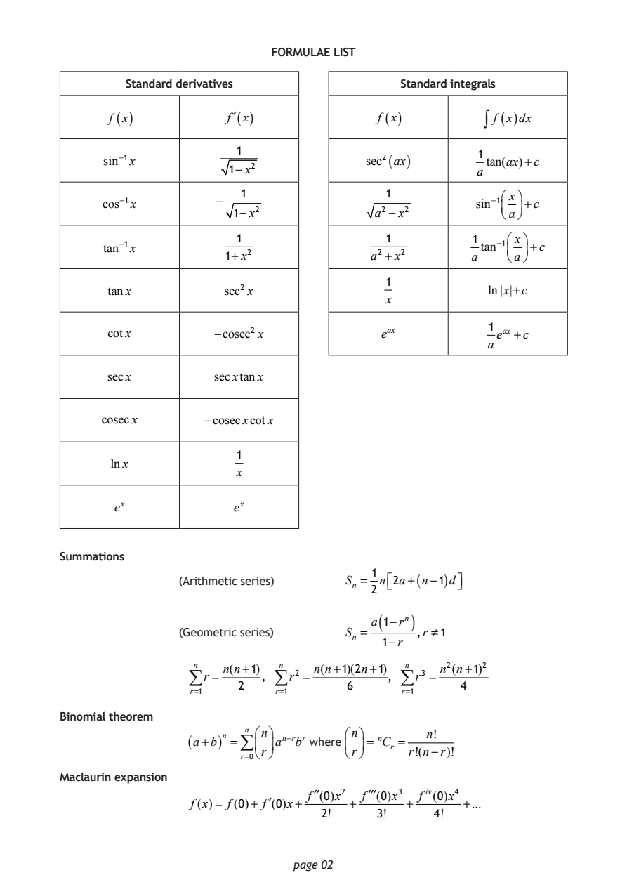
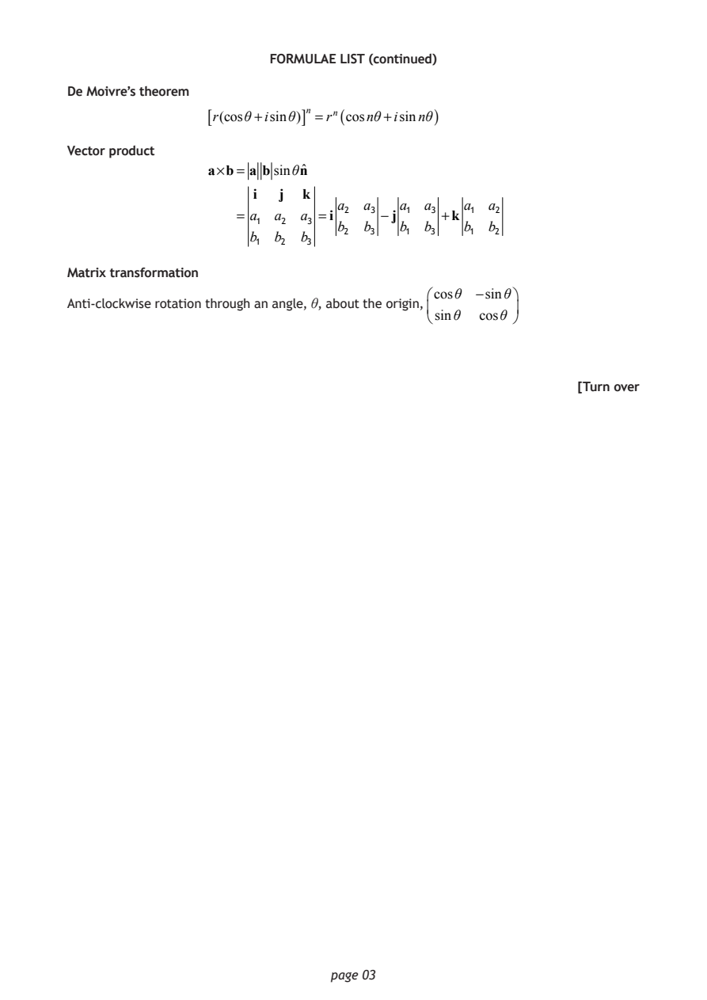
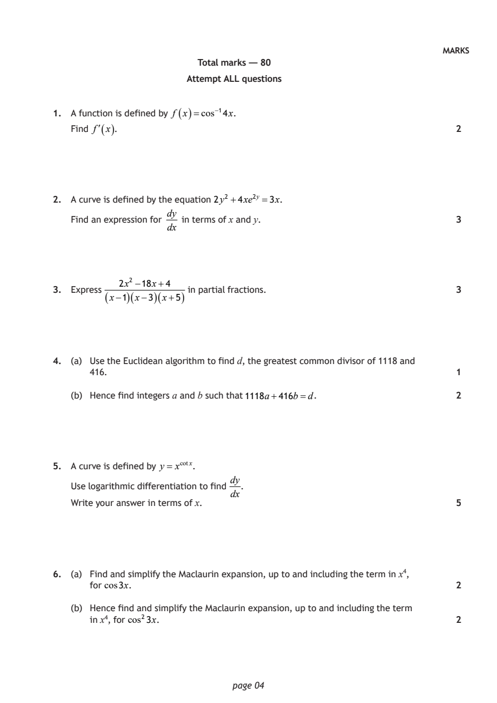
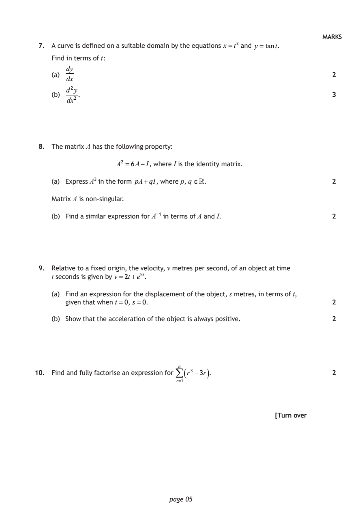
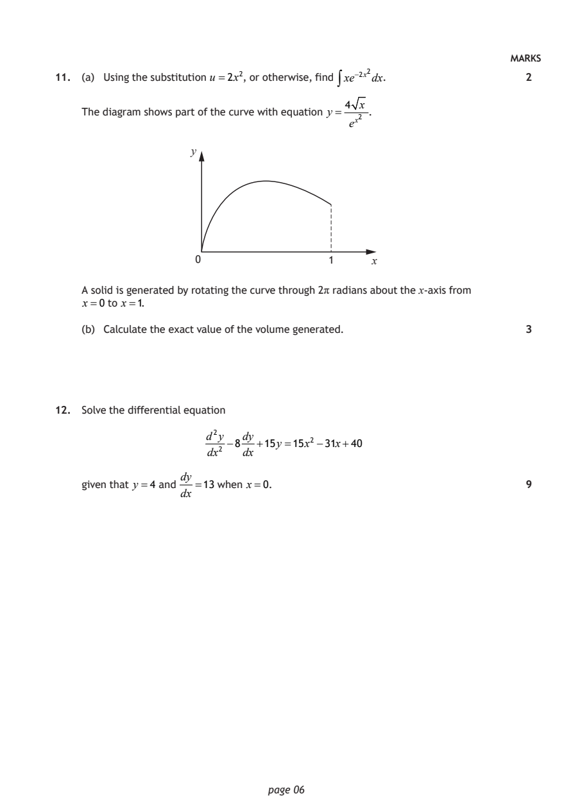
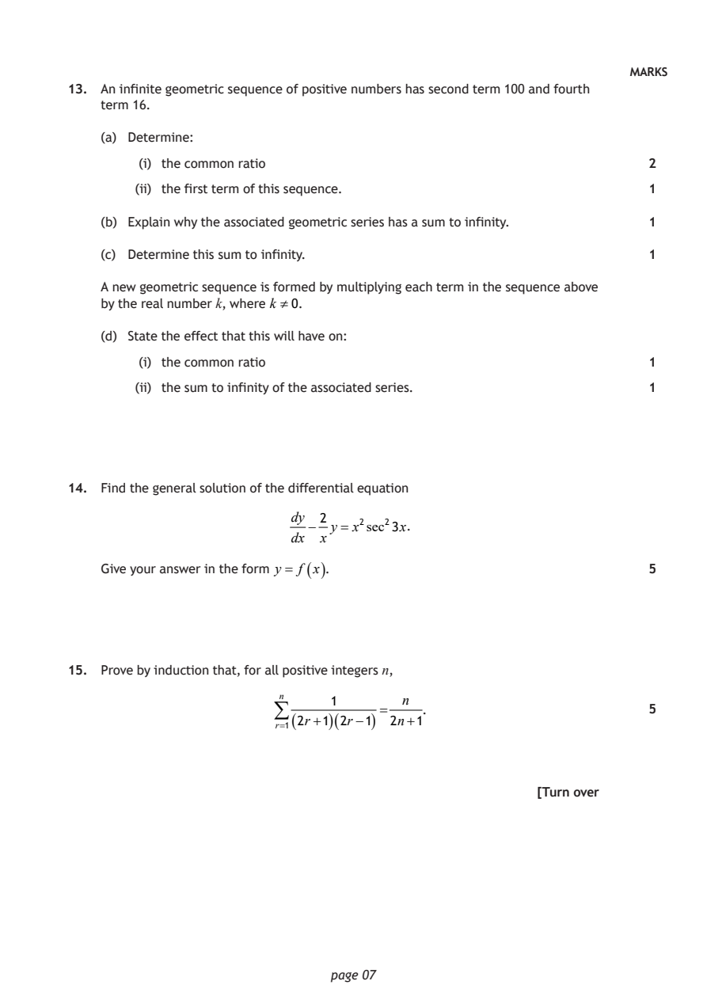
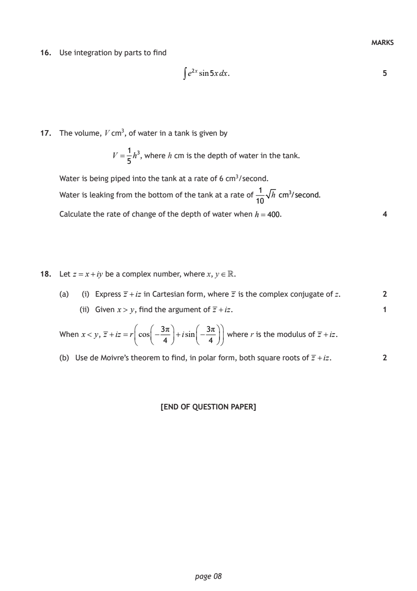

2025 Advanced Higher Mathematics - Paper 2 questions
Source: Scottish Qualifications Authority (SQA) / Qualifications Scotland. This is a StemInteract HTML companion, not an official HTML edition. Selectable text is supplied alongside original page images. Use the images or original PDF for equations, powers, fractions, vector notation, tables and diagrams; text extraction cannot fully preserve mathematical layout.
Jump to a question
PDF page 1

Selectable page text
AH
National
Qualications
2025
X847/77/12 Mathematics
Paper 2
MONDAY, 12 MAY
10:30 AM – 1:00 PM
Total marks — 80
Attempt ALL questions.
You may use a calculator.
To earn full marks you must show your working in your answers.
State the units for your answer where appropriate.
You will not earn marks for answers obtained by readings from scale drawings.
Write your answers clearly in the spaces provided in the answer booklet. The size of the space
provided for an answer is not an indication of how much to write. You do not need to use all the
space.
Additional space for answers is provided at the end of the answer booklet. If you use this space
you must clearly identify the question number you are attempting.
Use blue or black ink.
Before leaving the examination room you must give your answer booklet to the Invigilator; if you
do not, you may lose all the marks for this paper.
©
*X8477712*
A/PBPDF page 2

Selectable page text
FORMULAE LIST
Standard derivatives Standard integrals
f (x) f′(x) f (x) ∫ f (x)dx
1
1
sin⁻¹x sec²(ax) tan(ax)+c
1−x² a
1 1 ⎛ x⎞
cos⁻¹x − sin⁻¹⎜ ⎟+c
1−x² a² −x² ⎝a⎠
1 1 1 ⎛ x⎞
tan⁻¹x tan⁻¹⎜ ⎟+c
1+x² a² +x² a ⎝a⎠
1
tanx sec² x ln|x|+c
x
1
cotx −cosec²x e^{a}^{x} e^{a}^{x} +c
a
secx secxtanx
cosecx −cosecxcotx
1
lnx
x
e^{x} e^{x}
Summations
1
(Arithmetic series) Sₙ = n⎡ ⎣ 2a+(n−1)d⎤ ⎦
2
( )
a 1−rⁿ
(Geometric series) Sₙ = ,r ≠1
1−r
n n(n+1) n n(n+1)(2n+1) n n²(n+1)²
∑r = , ∑r² = , ∑r³ =
2 6 4
r=1 r=1 r=1
Binomial theorem
n ⎛n⎞ ⎛n⎞ ₙ n!
(a+b)ⁿ =∑ ⎜ ⎟aⁿ⁻^{r}b^{r} where ⎜ ⎟= Cᵣ =
⎝r⎠ ⎝r⎠ r!(n−r)!
r=0
Maclaurin expansion
f′′(0)x² f′′′(0)x³ fⁱ^{v}(0)x⁴
f(x)= f(0)+ f′(0)x+ + + +...
2! 3! 4!
page 02PDF page 3

Selectable page text
FORMULAE LIST (continued)
De Moivre’s theorem
[r(cosθ+isinθ)]ⁿ =rⁿ(cosnθ+isinnθ)
Vector product
a×b= a bsinθnˆ
i j k
a₂ a₃ a₁ a₃ a₁ a₂
= a₁ a₂ a₃ =i −j +k
b₂ b₃ b₁ b₃ b₁ b₂
b₁ b₂ b₃
Matrix transformation
⎛cosθ −sinθ⎞
Anti-clockwise rotation through an angle, θ, about the origin,
⎜ ⎟
⎝sinθ cosθ ⎠
[Turn over
page 03PDF page 4
Paper 2, Question 1Paper 2, Question 2Paper 2, Question 3Paper 2, Question 4Paper 2, Question 5Paper 2, Question 6
Selectable page text
MARKS
Total marks — 80
Attempt ALL questions
1. A function is defined by f
(
x
)=cos⁻¹4x.
Find
f(
x
)
. 2
2. A curve is defined by the equation 2y² +4xe²^{y} =3x.
dy
Find an expression for in terms of x and y. 3
dx
2x² −18x+4
3. Express in partial fractions. 3
( x−1 )( x−3 )( x+5 )
4. (a) Use the Euclidean algorithm to find d, the greatest common divisor of 1118 and
416. 1
(b) Hence find integers a and b such that 1118a+416b=d. 2
5. A curve is defined by y = x^{c}^{o}^{t}^{x}.
dy
Use logarithmic differentiation to find .
dx
Write your answer in terms of x. 5
6. (a) Find and simplify the Maclaurin expansion, up to and including the term in x⁴,
for cos3x. 2
(b) Hence find and simplify the Maclaurin expansion, up to and including the term
in x⁴, for cos²3x. 2
page 04PDF page 5
Paper 2, Question 7Paper 2, Question 8Paper 2, Question 9Paper 2, Question 10
Selectable page text
MARKS
7. A curve is defined on a suitable domain by the equations x=t² and y =tant.
Find in terms of t :
dy
(a) 2
dx
d²y
(b) . 3
dx²
8. The matrix A has the following property:
A² =6A−I, where I is the identity matrix.
(a) Express A³ in the form pA+qI, where p, q . 2
Matrix A is non-singular.
(b) Find a similar expression for A⁻¹ in terms of A and I. 2
9. Relative to a fixed origin, the velocity, v metres per second, of an object at time
t seconds is given by v=2t+e⁵^{t}.
(a) Find an expression for the displacement of the object, s metres, in terms of t,
given that when t =0, s=0. 2
(b) Show that the acceleration of the object is always positive. 2
10. Find and fully factorise an expression for ⁿ ( r³−3r ) . 2
r=1
[Turn over
page 05PDF page 6
Paper 2, Question 11Paper 2, Question 12
Selectable page text
MARKS
11. (a) Using the substitution u =2x², or otherwise, find ∫xe⁻²^{x}²dx. 2
4 x
The diagram shows part of the curve with equation y= .
e^{x}²
y
0 1 x
A solid is generated by rotating the curve through 2π radians about the x-axis from
x=0 to x=1.
(b) Calculate the exact value of the volume generated. 3
12. Solve the differential equation
d²y dy
−8 +15y =15x² −31x+40
dx² dx
dy
given that y =4 and =13 when x=0. 9
dx
page 06PDF page 7
Paper 2, Question 13Paper 2, Question 14Paper 2, Question 15
Selectable page text
MARKS
13. An infinite geometric sequence of positive numbers has second term 100 and fourth
term 16.
(a) Determine:
(i) the common ratio 2
(ii) the first term of this sequence. 1
(b) Explain why the associated geometric series has a sum to infinity. 1
(c) Determine this sum to infinity. 1
A new geometric sequence is formed by multiplying each term in the sequence above
by the real number k, where k 0.
(d) State the effect that this will have on:
(i) the common ratio 1
(ii) the sum to infinity of the associated series. 1
14. Find the general solution of the differential equation
dy 2
− y = x²sec²3x.
dx x
Give your answer in the form y = f ( x ) . 5
15. Prove by induction that, for all positive integers n,
n 1 n
= . 5
( 2r+1 )( 2r−1 ) 2n+1
r=1
[Turn over
page 07PDF page 8
Paper 2, Question 16Paper 2, Question 17Paper 2, Question 18
Selectable page text
MARKS
16. Use integration by parts to find
∫e²^{x}sin5xdx. 5
17. The volume, V cm³, of water in a tank is given by
1
V = h³, where h cm is the depth of water in the tank.
5
Water is being piped into the tank at a rate of 6 cm³/second.
1
Water is leaking from the bottom of the tank at a rate of h cm³/second.
10
Calculate the rate of change of the depth of water when h=400. 4
18. Let z = x+iy be a complex number, where x, y .
(a) (i) Express z +iz in Cartesian form, where z is the complex conjugate of z. 2
(ii) Given x> y, find the argument of z +iz. 1
3π 3π
When x< y, z +iz =rcos − +isin − where r is the modulus of z +iz.
4 4
(b) Use de Moivre’s theorem to find, in polar form, both square roots of z +iz. 2
[END OF QUESTION PAPER]
page 08